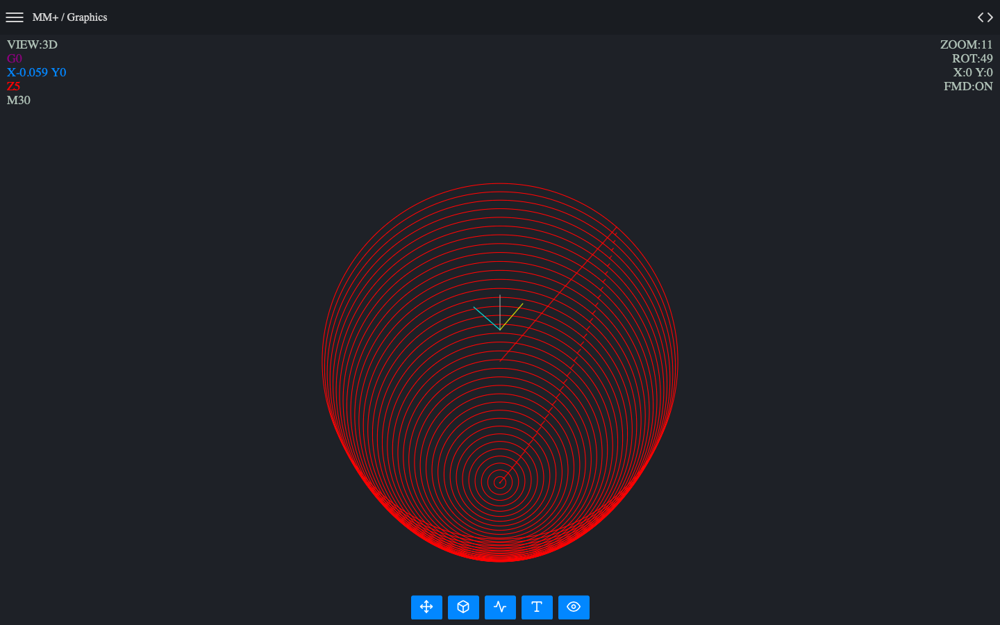

About Macro Mill Plus CNC
Macro Mill Plus CNC is the successor to the Macro Terminal CNC. This application was created on the basis of many opinions and observations of the users of Macro Terminal CNC and others. Unfortunately, Macro Terminal CNC was not prepared for such a number of improvements and additions and it was necessary to create a new application from scratch. And so the Macro Mill Plus CNC was born. The most modern and advanced environment for creating CNC macro programs and any other CNC programs for milling machines and machining centers. The interpreter's work has been sped up. A 3D image has been added showing the toolpath and the tools used. Improved graphics module (100 times faster than Macro Terminal CNC!). As if that were not enough, great emphasis was placed on security by adding AVS (Advanced Validation System) to the application. Due to the complexity, this application does not support CNC lathes as was the case with its predecessor. This task was taken over by Macro Lathe CNC, which specializes in creating and simulating CNC programs for these type of machines (CNC lathes).
Mobile CAM CNC team